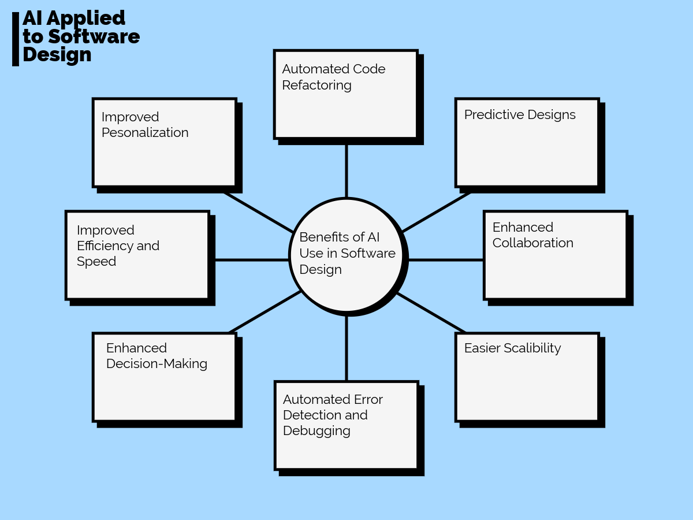

AI Applied to Software Design

Table of Contents
Introduction: Using AI in Software Design
Overview of AI’s growing role in software design, its benefits in automation, and its impact on software development.
State-of-the-Art Research: AI Tools in Software Design
Discussion of advanced AI tools used in software design, their capabilities, and how they enhance development efficiency.
Important Tools: Strengths and Weaknessess
Evaluation of different AI tools, comparing their strengths, weaknesses, and use cases in software design. #### Emerging Tools
Exploration of new and evolving AI technologies that are shaping the future of software development.
Introduction: Using AI in Software Design
As of late, artificial intelligence has been increasingly more apparent in software designing. Oftentimes, it is found to effectively automate repetitive, complex tasks that do not require human intervention. For example, a website can use AI to handle FAQs and assist customers at all times. Other services AI can provide include code generation, bug detection, security testing, code analysis, etc. All these handy tools can enhance one’s coding experience where it be the front or back end of a website/app. Despite concerns that AI may take over and eliminate engineers, it can not be performed properly without human guidance. As AI is becoming a fundamental part and redefining the role of what a software engineer and developer is, it increases productivity, efficiency, and innovation.
State-of-the-Art Research: AI Tools in Software Design
State-of-the-art AI tools in software design have completely changed the way developers create, optimize, and maintain software. Code assistants like GitHub Copilot and Codeine which leverage AI models have taken over in recent years. These tools provide real-time code suggestions, auto-completions, and sometimes even entire function implementations. Additionally, they significantly speed up development while reducing syntax and logic errors. Beyond coding, AI-powered software architecture tools like Cogram and UML AI assistants help developers plan system structures by recommending design patterns, generating diagrams, and optimizing architecture decisions. Additionally, AI-driven front-end tools like Sketch2Code can convert wireframe sketches into working UI components, further streamlining the design process. As AI continues to advance, these tools will further integrate into the software development lifecycle, making design and development more efficient and automated. Various AI tools like Snyk Code and DeepCode detect security vulnerabilities which help developers fix issues before they can escalate. Codiga and Refact.ai provide automated refactoring suggestions to further improve readability and efficiency. Additionally, AI-driven testing tools can generate unit tests automatically, improving code coverage and stability. By integrating these AI tools, developers can maintain software more efficiently, ensuring long-term sustainability and reducing manual effort.
Important Tools: Strengths and Weaknessess
AI-powered tools like GitHub Copilot, DeepCode, and Applitools are transforming software development by enhancing code quality, security, and efficiency. GitHub Copilot provides real-time code suggestions, reducing repetitive tasks, but it can generate incorrect or generic solutions that may introduce security risks. DeepCode specializes in AI-driven static code analysis, detecting vulnerabilities and improving code security, though it sometimes produces false positives and lacks detailed issue explanations. Applitools focuses on AI-driven visual testing, catching UI inconsistencies across devices, but requires integration with testing frameworks and is limited to front-end validation. While these tools streamline development, human oversight remains essential to ensure accuracy and best practices.
Emerging Tools
There are various emerging tools for AI applied to software design. Some of these tools include GitHub Copilot, DeepCode, Applitools, CodeScene, and ChatGPT. These tools are centered around code generation, software architecture, code review, software testing, project management, and natural language processing. AI is becoming an integral part of software design to enhance productivity, improve code quality and streamline the development lifecycle. Some AI-powered tools like GitHub Copilot provide real-time code suggestions and auto complete functions in numerous programming languages to aid in reducing time spent on writing repetitive code. AI is used to learn from millions of software development repositories, and test the visual aspects of applications and analyze them like the human eye and brain would, but with the power of a machine. It is also used to combine code quality metrics with behavioral code analysis which identify social patterns and hidden risks in source code; and assists in debugging, code explanations, and software development with tools similar to ChatGPT.
Sources
A. Robles-Aguilar, J. O. Ocharán-Hernández, Á. J. Sánchez-García and X. Limón, “Software Design and Artificial Intelligence: A Systematic Mapping Study,” 2021 9th International Conference in Software Engineering Research and Innovation (CONISOFT), San Diego, CA, USA, 2021, pp. 132-141, doi: 10.1109/CONISOFT52520.2021.00028. AI code review: How it works and 5 tools you should know - Swimm. (2024, December 17). Swimm. https://swimm.io/learn/ai-tools-for-developers/ai-code-review-how-it-works-and-3-tools-you-should-know#:~:text=DeepCode%20is%20an%20AI%20code,that%20human%20reviewers%20might%20overlook.
Battat, M. (2020, April 17). What is Applitools? AI-Powered End-to-End Testing | Applitools. https://applitools.com/blog/what-is-applitools/
Wikipedia contributors. (2025, February 27). CodeScene. Wikipedia. https://en.wikipedia.org/wiki/CodeScene#:~:text=CodeScene%20is%20a%20software%20engineering,hidden%20risks%20in%20source%20code.
Finio, M., & Downie, A. (2024, November 25). AI in Software Development. IBM. https://www.ibm.com/think/topics/ai-in-software-development
GitHub. (n.d.). GitHub Copilot: Your AI pair programmer. Retrieved March 2025, from https://github.com/features/copilot
Snyk. (n.d.). Snyk Code (formerly DeepCode): AI-powered static code analysis. Retrieved March 2025, from https://snyk.io/product/snyk-code/
Applitools. (n.d.). Applitools: AI-powered visual testing. Retrieved March 2025, from https://applitools.com/